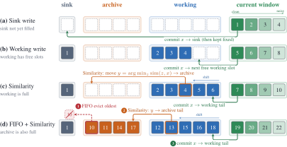
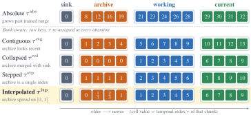

Paper Analysis
01 · A Missing Interval in the Cache
固定缓存通常留下最初几帧作为稳定锚点，再保留最近窗口维持运动连续性。某个事件若发生在开头之后，又已经离开近期窗口，它就不再有可供 attention 读取的 KV。作者称之为 mid-horizon forgetting，重点是证据没有被保存，而不是注意力仅仅没有找到它。
输入是文本、已生成历史和当前噪声窗口，输出是持续生成的视频。这里的语义指标来自 VBench，并不是显式开放词汇语义分支。方法没有加入 CLIP 蒸馏，也没有利用 VLM 决定对象身份。
与重建相关的启发是：即使状态大小固定，内部空间如何分配也会决定模型是否还能利用中间发生过的内容。但视频生成的主体一致性不等于三维重建准确性，不能直接把分数换成深度或位姿收益。
Paper Analysis
02 · Reading the Original Cache Diagram

Jiaming Zhang et al. · Original figure, unmodified · CC BY 4.0 · Paper & Caption ↗
Figure 2 从上到下表示缓存逐渐填满后的变化。sink 固定保留开头，working 接纳当前新产生的干净 chunk，archive 为离开工作区的历史提供位置。默认配置是 3、6、12 个 latent frames，共 21 帧缓存；另有当前去噪窗口，不能把这 21 帧当作全系统全部激活内存。
working 满时，计算其中每个 chunk 与新 chunk x 的 key 相似度，将最不相似的 y 移到 archive，再把 x 追加到 working 尾部。直觉是保留一个与新事件互补的旧事件，而不是让 archive 全是新内容的近重复。这个选择不是“删除最不相似的历史”：它把该历史从工作区晋升到档案区。
archive 满后按 FIFO 删除其中最旧的 chunk。因此长期信息依然可能被覆盖，只是比纯近期 FIFO 多了一个存活阶段。原文未在方法段完整给出 key 相似度的池化与归一化实现，不能自行假设它就是 CLIP 余弦相似度。
教学例子：当前来到 B 区域，working 中仍有 A 区域证据，若 A 与新内容最不相似，就可能被放入 archive；之后回到 A，attention 仍有机会读取它。若 A 已被 archive FIFO 淘汰，这条路径仍然失效。
C = [sink | archive | working] y = argmin_(z in working) sim(z, x) move y to archive; append x to working when archive exceeds capacity: evict its oldest chunk K_context = [sink; archive; working; current]
Paper Analysis
03 · Stored Evidence Still Needs a Readable Position

Jiaming Zhang et al. · Original figure, unmodified · CC BY 4.0 · Paper & Caption ↗
仅保留旧 KV 还不够。通常 key 在写入时已经施加 RoPE 旋转，绑定当时的时间索引。随着序列增长，索引离开训练范围；把一段旧缓存挪到新区域，也不会自动改变它已经编码的位置。
Figure 3 比较不同分区的时间安排。Memory Forcing 存储未旋转的 raw keys，每次 attention 前根据当前 bank 分配时间索引，再旋转 query 与 key。value 不做这一位置旋转，空间维的 RoPE 也不是本文重新设计的部分。
默认 Interpolated 方案将 sink 置于 0，archive 的 N_a 帧均匀映射到 [0,1]，working 从 1 开始递增，current 接在后面。正文和图注多次写 (0,1)，但公式包含两个端点；N_a=1 时还明确设为 0。应以公式理解实际候选实现，不能说所有 bank 的时间位置绝不重合。
教学算例：N_a=3 时 archive 为 0、0.5、1，working 为 1、2、3……。它保留档案内部的顺序差别，同时压缩真实时间间隔。这个索引不是物理时间，也不能用来恢复准确事件间隔。
关键启发是写入与读取必须一起设计：内容保留了但位置编码失配，历史仍可能难以利用。对 LingBot-Map 迁移时应先核对其实际位置编码和缓存格式，不应直接复制视频时间压缩。
q_rot = R(tau_q) q; k_rot = R(tau_k) k tau(sink) = 0 tau(archive_a) = (a-1)/(N_a-1), or 0 when N_a=1 tau(working_w) = w Raw keys are rotated again for each attention call.
Paper Analysis
04 · Training and Cache Insertion
方法沿用 Rolling Forcing 的滚动去噪。一个窗口中的较早 chunk 接近干净，较晚 chunk 噪声更高，邻近内容可以在提交前共同细化。默认 T=4，每 chunk 3 个 latent frames，噪声步为 1000、750、500、250。窗口内部允许共同交互，不能把这种 chunk 生成写成逐图像帧严格单向注意力。
训练将 rolling 与 self-forcing 窗口以相同概率混合，推理只用 rolling。训练历史来自模型自己的 rollout，以减轻真实历史训练、自生成历史推理之间的差异。目标仍是 DMD 分布匹配：冻结 teacher 提供数据分布 score，另一个网络估计学生生成分布 score，两者差异推动生成器更新。
因此它没有新增语义 loss 或专门的 memory reconstruction loss。硬 argmin 晋升与 FIFO 也不是可微学习的选择策略，不能凭“训练时使用缓存”推定未来误差会训练离散选择规则，或穿过全部历史缓存反传。原文未提供足够实现细节来断定全时域梯度保留方式。
Aligned cache insertion 修正另一个容易忽略的问题：写入干净 chunk 的 forward 需要看到 sink、archive、working 与 current，和去噪时的上下文集合一致。否则同一内容在不同上下文下形成的 KV 可能不匹配，未来读取的状态就不是 loss 所训练的表示条件。
论文默认训练 1,000 步，batch 32，使用 32 张 A800；生成器每五次 fake-score 更新后更新一次。5B 还经过因果扩散训练和因果 ODE 初始化，并按低、中、高运动 4:3:3 组织数据。因此“缓存改动很小”不意味着它是无需训练的插件。
L_DMD compares p_generated,t with p_data,t grad_theta L_DMD ≈ -E[(s_data - s_generated) · dG_theta/dtheta] Insertion context = denoising context Discrete promotion and FIFO are prescribed rules.
Paper Analysis
05 · Reading the Controlled Comparisons
评测在 16 FPS、832×480 下生成 5、15、30、60 秒视频。官方 VBench 报告 Total、Quality、Semantic，MovieGen 与两个复杂提示集主要报告 Quality。VBench-Complex 仅有 20 个提示、Gen-Complex 30 个，不能把小型复杂集的结果当成普遍场景保证。
下表从 Table 2 摘取消融值。working alone 到 archive+working 的 Total 从 82.41 变为 83.58，支持分区设计的潜力。但表格没有逐行列出总 KV 数，仍需代码确认 working-alone 是否补齐等量容量，才能严格排除“只是多了历史容量”。
保持分区而改变 RoPE 时，Interpolated 为 83.58，Stepped 为 82.56、Contiguous 为 81.31。这是较直接的位置编码证据：分区中的历史是否容易被读取，与历史是否存在同样重要。
相似度晋升比 FIFO 的 30 秒 Total 高 0.19、60 秒高 0.24，收益比位置编码差异小。30 秒 Quality 却是 FIFO 84.59、Similarity 84.57；正文说各项都更强并不完全符合表格。又因为 FIFO 是推理时替换训练默认策略，该对照包含训练与测试策略不一致的影响。
| Comparison | Total ↑ | Quality ↑ | Semantic ↑ |
|---|---|---|---|
| Working only | 82.41 | 83.46 | 78.22 |
| Archive + Working | 83.58 | 84.57 | 79.63 |
| Contiguous RoPE | 81.31 | 82.37 | 77.10 |
| Stepped RoPE | 82.56 | 83.37 | 79.29 |
| FIFO promotion / 30s | 83.39 | 84.59 | 78.59 |
| Similarity promotion / 30s | 83.58 | 84.57 | 79.63 |
Paper Analysis
06 · Long Videos Do Not Win Every Metric
1.3B 的官方 VBench Total 从 5 秒 83.88 降到 60 秒 83.20，下降 0.68；RollingForcing 的 Self-Forcing 初始化对应 83.63 到 81.64，下降 1.99。这是本文长时稳定性较清晰的一组证据，但 VBench Total 本身不是针对历史找回能力的专门测试。
不要将“下降最少”推广到每个测试集合。MovieGen Quality 中，本方法从 82.28 降到 80.66，下降 1.62；LongLive 为 80.15 到 79.13，下降 1.02。前者最终分数更高，但降幅并非最小，两种判断应分开。
5B 的 60 秒官方 VBench Total 为 81.93，低于 1.3B 的 83.20。作者展示 5B 在复杂多人场景上的定性优势，却不能据此说它在全部量化设置都更好。不同主干、初始化与训练数据也让模型规模不能单独解释差异。
固定缓存意味着 attention 的历史规模不随总时长无限增长；不意味着可记住无限数量事件，也不等于测量过无限长视频。实验最长 60 秒，未提供足够吞吐和整体显存数字来支持任意硬件的实时性结论。
Paper Analysis
07 · What This Changes in a Memory Design
对当前语义进入 memory 的方案，它提醒我们区分三件事：历史内容是否被保留、保留下来的内容能否被正确寻址、下游模型是否学会使用它。只证明语义可从 token 解码出来，还没有覆盖后两项。
一个有针对性的研究对照是：同样的语义注入和缓存容量，分别固定读取接口与修改读取接口，检查未来几何收益是否只来自当前帧增强。还应观察局部历史离开密集窗口后的表现，而不仅是整段平均误差。这是基于本文机制提出的实验建议，不是它已完成的重建结论。
与 SMI 相比，Memory Forcing 不依赖在线 MLLM 决策；与 SMART 相比，它保留已有 KV 而非学习压缩槽位。三个方向分别强调内容决策、可寻址性和压缩状态，不能只统称“用了 memory”。本次未核实可运行官方实现，因此位置端点、容量配平与梯度截断仍保留为实现核查问题。
Discussion
Reading Questions
Is the least similar chunk discarded?
它先从 working 移入 archive，仍能被读取；只有 archive 容量满后，其最旧成员才按 FIFO 被淘汰。
Why store raw keys?
为了在每次读取时重新施加符合当前 bank 角色的时间旋转，避免永久绑定写入时的位置。
Does VBench Semantic measure semantic memory?
不是。它是生成视频的评测指标，不能证明存在开放词汇语义表示或可跨帧跟踪的对象身份。
Which result needs the most careful reading?
等容量分区消融需要逐配置核对缓存大小；5B 并非所有指标更好；30 秒 FIFO 的 Quality 还略高于 Similarity。
References
Original Figures 2 and 3 are reproduced without modification under CC BY 4.0. First submitted October 8, 2026; this note reads v3 dated October 19, 2026. The intermediate v2 is marked withdrawn in the submission history. No implementation or checkpoint was independently reproduced.
Verified on 2026-10-23. Paper results refer to the linked versions. Repository references were checked on this date.